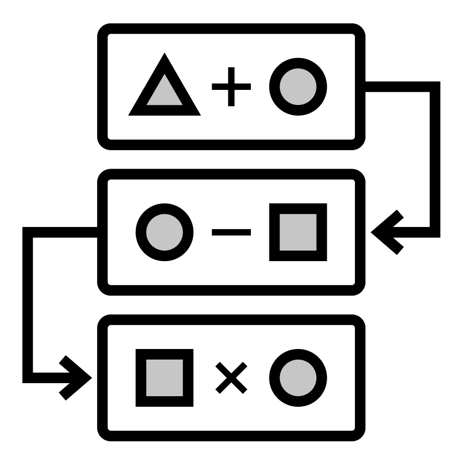
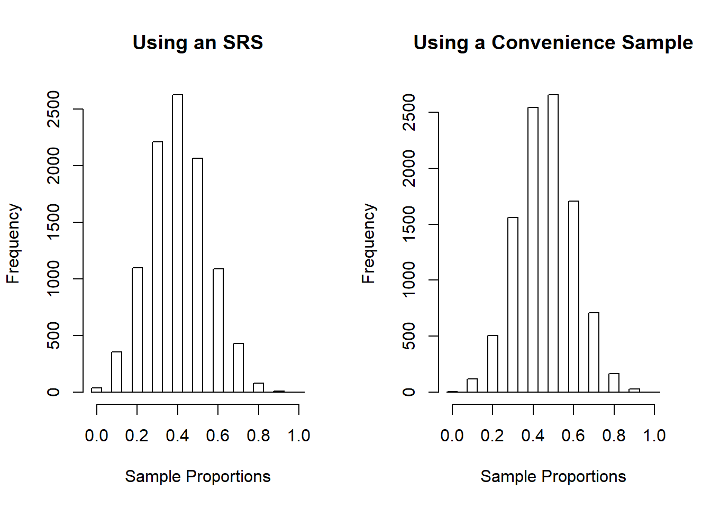

Chapter 2 Sampling Schemes and Experimental Design
2.1 Data in the Wild
Data is a collection of information about a group of individuals or units. Most often we have a number of variables, or measures of interest, that we observe on each individual or unit. The collection of information is called a dataset. Data is ubiquitous in today’s society. Healthcare, marketing, history, biology, … almost every field has data for which a sound statistical analysis can glean useful insights. However, the quality of data varies greatly from study to study and this implies the conclusions which you can draw from a study vary as well. Let’s jump in!
2.1.1 Data from Experiments
Some data comes from a well-designed experiment where a researcher uses sound principles to select units for the study and conduct interventions.
For example, a mechanical engineer wanted to determine which variables influence gas mileage of a certain year and model of a car. Gas mileage would be referred to as the response variable for this study since it characterized the performance of interest.
After careful consideration, the engineer chose to investigate a few explanatory variables they believed were associated with the response. They wanted to learn about the relationship between gas mileage and the factors below. A factor is an explanatory variable that takes on a finite number of values, called levels, set by the researcher.
Study factors (levels of each factor are given in parentheses):
- Tire pressure (low, standard)
- Octane rating of fuel (regular, midgrade, premium)
- Type of driving (defensive, aggressive)
They also chose to control or hold constant the following variables during the execution of the study:
- Weather conditions
- Route
- Tire type
- Past car usage
The engineer randomly selected a sample of 24 cars from the assembly line for that year and model of car (we’ll learn more about the importance of selecting a representative sample of cars shortly). Software was used to randomly assign a treatment to each of the 24 cars. A treatment is a particular combination of the factor levels. For instance, low tire pressure, regular octane fuel, and defensive driving was a treatment. The cars would be called the experimental units (EUs) as they are the unit the treatments are assigned to.
The experiment was run and the gas mileage found for each car. As the car was measured, we’d refer to the car as the observational unit (OU).
The key thing that makes this study an experimental study is the active role the research plays in manipulating the environment. Here, the researcher uses random assignment of treatments to the EUs.
Experimental Study - researchers manipulate the conditions in which the study is done.
Visual of experiment - maybe a researcher with arrows going out to cars where the tires, gas tank, and driver are emphasized in some way
This short description exhibits three important concepts in experimental design that we’ll come back to many times.
Pillars of experimental design: (Put an outer block around this)
- Randomization - treatments are randomly assigned to experimental units
- Replication - multiple (independent) experimental units are assigned the same treatment
- Control - some study conditions are held constant to reduce variability in the response
2.1.2 Data from Observational Studies
Some data comes from an observational study where the researcher collects data without imposing any changes.
For example, an economist wanted to investigate the effects of recently added tariffs on agricultural products to the amount and value of such products that are traded between the United States and Asia. This study had two response variables, the amount and value of each product traded between the two parties.
In order to take into account seasonal variation and time of year, the economist decided to compare the two response variables from the current year - 6 months worth of data - against the values of the two response variables during the same 6 month periods for each of the past 5 years. The year variable associated with a measurement was an explanatory variable. Alternatively, the year variable could have also been labeled to take on one of two values: no-tariff (past years’ data) or tariff (current year’s data).
The researcher obtained the data from the census bureau and conducted their analysis.
Notice that the researcher, while certainly being actively involved in the careful consideration of the data to be collected and how to format the data, did not actively intervene or impose a change. This is the key component of an observational study.
Observational Study - researchers collect data without imposing any changes on the study environment.
Visual of observational study here - something like a researcher with a clipboard looked at a globe with arrows to represent trading or something like that
2.1.3 Observational vs Experimental Studies
You may have noticed that both example studies had some things in common. For instance, both studies had response variables that characterize the performance of the study in some sense. Importantly, these response variables had variation. That is, observing the variable is non-deterministic even under seemingly identical situations. Accounting for, and dealing with, this variation is at the heart of the reason statistical methods are needed! There were also explanatory variables that the researcher was interested in with regard to their relationship with the response variable. Determing ad quantifying these relationships is often the major goal of a study.
Both studies also hoped to make statements or conclusions about a larger group using data from a subset of that larger group. This idea is referred to as statistical inference. More formally the group of values, items, measurements, or individuals of interest defines the population of interest and the data collected on that group represents the sample. The number of observations in the sample is referred to as the sample size. For the gas mileage example, the population was all cars of the year and make in question, the sample was the data collected on the 24 cars, and the sample size was 24. For the tariff example, the population was all future agricultural products traded between the United States and Asia, the sample was the information from the six years of trade data, and the sample size is six. The two populations mentioned here differ in that the car population is a real, finite population and the trade population is a conceptual, infinite population. As long as a finite population is large relative to the sample size, the differences tend not to be important. We’ll discuss these ideas in more detail as they arise.
Population - (Possibly conceptual) group of values, items, measurements, or individuals of interest
Sample - Subset of the population on which we observe data
Sample Size - Number of observations in the sample
Statistical Inference - Process of using sample data to make statements or claims about a population. Two major goals of inference:
- Determining and quantifying relationships between explanatory variables and the response
- Predicting the response for some setting of explanatory variables.
Both of these studies had to determine how to obtain their observations. For the experiment, 24 cars were used. For the observational study, six years of data were collected. How this data is collected can be extremely important in terms of the types of conclusions that can be made. Data needs to be representative of the population in which the researcher hopes to make inference. Otherwise, the conclusions made are likely invalid or in need of qualifications. We’ll discuss the idea of what makes a good or bad sampling scheme later in the chapter.
The major difference between the two studies was the active (experimental) and passive (observational) roles played by the researcher. This difference is also of vital importance to the types of conclusions that can be made from the study. A well-designed experiment can often allow the researcher to infer causation to the treatments, whereas an observational study cannot.
The conclusions a researcher can make based on how the data were collected and the type of study are outlined in the table below.
Redo this table with our own wording
Figure 2.1: Scope of Inference, cite: Khan Academy
Doing an observational study doesn’t mean that your study is bad! An observational study is sometimes done out of necessity when an experiment wouldn’t be ethical or feasible. For the tariff example, there really isn’t a way to conduct an experiment. If we wanted to design an experiment to see if smoking causes lung cancer, that would be unethical because we can’t force people to smoke. The key point is that the implications we can draw will differ greatly between experimental and observational studies and will depend heavily on the quality (in relation to the population) of the data you have. To apply causation to an observational study, causal inference methods can sometimes be used. We won’t cover this extensive topic in this text. See the references and readings section for a few useful texts.
2.1.4 The Role of Statistics
A statistic itself is generally a summary of data. When most people think of statistics they think of things like a batting average or a proportion of people that will vote for a proposal. Statistics as a discipline is the science of learning from data. It encompasses the collection of data, the possible design of an experiment, the summarization of collected data, and the modeling or analysis used in order to make a decision or further scientific knowledge.
Statistics in everyday use usually refers simply to summaries about data (means/averages, proportions, or counts).
Statistics as a field encompasses a much larger range of ideas including how to collect data, model data, and make decisions or come to conclusions when faced with uncertainty.
Statistical methods are needed in situations where data is variable. There is no need to apply statistical methods to study the relationship between temperature in degrees Celsius and degrees Fahrenheit. Given the degrees in Celsius, we know teh exact value in degrees Fahrenheit. However, if we again collected data about the gas mileage of vehicles under the exact same study conditions we’ll get slightly different gas mileage readings. If we observed another six month period of trade data we’ll see different amounts and values traded. Accounting for this variability in data is the reason to apply statistical methods and is a key component of any statistical analysis.
Ideally, one should try to take a holistic view of a study. Before any data is collected it is vital to understand the goals and background of the study. These will inform the data you ideally want to collect as well as the data that you are able to collect - which may need to act as a proxy. A plan should be determined for the actual collection and storing of the data. The entire study design will then inform the statistical analysis and conclusions that can be drawn.
Taking this bigger picture view of the problem, we can usually follow these steps:
Add icons to these as well as the overall logo here
- Define the objective of the experiment and understand the background (Define Objective & Background)
 Select appropriate response variables (Select Response)
Select appropriate response variables (Select Response)
 Identify sources of variation (Determine Sources of Variation)
Identify sources of variation (Determine Sources of Variation)
-  Choose sampling scheme and/or experimental design (Select Design)
 Carry out the study (Do Study)
Carry out the study (Do Study) Statistically analyze the data (Do Statistical Analysis)
Statistically analyze the data (Do Statistical Analysis)
 Draw conclusions from the analysis while considering limitations and the steps above as well as communicate results (Draw Conclusions & Communicate)
Draw conclusions from the analysis while considering limitations and the steps above as well as communicate results (Draw Conclusions & Communicate)
We’ll focus on this entire process in our chapter motivating examples. Mostly, we’ll investigate designed experiments. We attempt to tackle each major topic in this text with a problem-based approach. That is, we identify a real-world motivating example and discuss the relevant statistical ideas in the context of that problem. We then provide a discussion of the main statistical ideas and concepts and provide related references and readings. Each chapter includes with a section that outlines the use of R and SAS for implemention. Finally, where applicable, we include a section that outlines some of the mathematical concepts - this section is always optional!
2.2 Motivating Example: Sampling - Farmer’s Market
2.2.1 Define Objective & Background
A nutrition scientist wanted to understand the cleanliness and food hygiene of the vendors at the North Carolina State Farmer’s Market (henceforth the farmer’s market). Secondarily, she wanted to learn about vendor sales to see if there was a relationship with their cleanliness and food hygiene. The researcher had access to the names of each vendor’s business, their general purpose, and the products they sold.
The researcher needed to decide the scope of their study. Formally, they needed to define the population of interest. The population is the group of people or units of interest to the researcher. As her interest centered around food-related businesses, she restricted to looking at the vendors which sold horticultural crops. She hoped that conclusions made by her study could apply to all horticulture vendors at the farmer’s market - thus, this is her population.
Note: One could try to do a study at just the North Carolina State Farmer’s Market and extend the results to all farmer’s markets in the state or in the south, but that would require many assumptions to be valid.
A list of the horticultural products sold and their availability is reproduced below.


2.2.2 Select Response
The researcher needed to determine the variables to collect that would best help to answer their questions of interest. These variables that characterize the experiment are called response or target variables.
To investigate the knowledge of hygiene and safety, a short questionnaire was developed to allow the vendor’s head manager (or similar employee) to describe their safety protocol and knowledge:
- For your produce with signs that say “clean” or “washed”, what does this mean?
- How are the foods transported to the market? eg: refrigerated/closed storage
- What food safety risks do you as a vendor worry about?
- Do you require one-use gloves to be used? (Yes or No)
- Do you designate a person in charge of money transactions? (Yes or No)
The researcher also planned to do an assessment of the cleanliness of each vendor’s station at different times. Her team would pick 30 days during the summer in which they’d walk through the vendor stations and collect the following information:
- Overall is the station clean (Yes or No)
- Is anyone smoking around the food products? (Yes or No)
- Are tables covered? (Yes or No) If so, what is the material?
- Do employees appear to be clean? (Yes or No)
- Are one-use gloves used? (Yes or No)
- Is there a designated person in charge of money transactions (Yes or No)
She noted that there is a yearly cycle to the products sold and decided to collect vendors sales information by looking at the (AMT) amount sold in the last year (in dollars), the (PURCHASE) total number of purchases made in the last year, and the (NUM_ITEMS) total number of items sold in the last year. For the last variable, they had to decide how to measure the number of items sold for the different types of crops. For most of the crops looking at the total weight (in lbs) sold made sense. But, for some, other measures were needed. For example, for sweet corn the number of ears sold would be recorded.
You can see that there are many decisions that the researcher must make in simply deciding the response variables to collect! A poor choice here can make or break a study.
2.2.3 Determine Sources of Variation
The response variables clearly have some relationship to other variables that could be collected. For instance, the NUM_ITEMS variable is clearly going to be different based upon what crops the vendor sells. The AMT variable would differ depending on the size of the vendor’s inventory. These are examples of explanatory variables or variables that define the study conditions. Explanatory variables go by many names such as predictors, features, or independent variables.
A main consideration about whether or not to record a variable is whether or not the variable would be related to a variation in a response variable. Since the response variables are truly what is of interest, there is really not much of a point in recording variables that likely have no relationship with it.
Choosing the explanatory variables can also indicate further questions of interest. For instance, the researcher may want to compare the percent of “Yes” for the overall cleanliness score for vendors that mainly sell vegetables to those that mainly sell fruit leading to a comparison across groups being of interest. She may want to try to model the AMT of cantaloupe sold as a function of the cleanliness score.
The average amount for the population or a subpopulation would be referred to as a parameter of interest. Formally, a parameter is a summary measure about a population. Common parameters investigated include a mean, proportion, median, or variance of different subgroups of the population.
The explanatory variables she collected about the vendors included the types of crops sold, the services they provide (grow, pack, and/or ship), and whether or not they are a “Got to be NC member”.
For the questionnaire, she added the additional questions below:
- Are there any organic or synthetic chemicals/fertilizers/pesticides/manures used on the products?
- Are all foods grown/processed by the vendors?
- What kind of soil were the products grown in? eg: organic/compost/plant material
For the assessment of cleanliness, she added the following question:
- How many people are working?
Should we talk about formalizing the other questions they want to answer here??
2.2.4 Select Design
For this study the researchers aren’t interested in doing an intervention so an observational study was being done. The major task to consider for the observational study is how to select participants from the population. The subset of the population we (attempt to) observe our data on is called the sample. The sample size is the number of measurements in the sample.
Ideally, we would measure every member of our population. This is called a census. If a census can be done then the value of a population’s parameter can be found exactly by simply summarizing the population data. However, conducting a census can be extremely costly or time-intensive so most of the time a census cannot be done. This means that the information we collect would likely be different if we collected it again. Accounting for this variability is the main reason statistical analysis is needed.
How the researcher selects their sample is extremely important. This method is often referred to as the sampling scheme. Using a statistically valid sampling scheme is vital to the assumptions made when doing statistical inference. A valid sampling scheme implies that every member of the population has a known and non-zero chance of inclusion in the sample.
There are many good ways to select the sample and many bad ways. Need to get more info about the farmer’s market to finish this part (Talk about bad first and why bad - visuals too) Talk about good and why good - visuals too.
This idea is further fleshed out at the end of the chapter. (reference/link this)
Here they chose to do a stratified sample to make sure that they didn’t leave out any important subgroups.
Should we talk about formalizing the other questions they want to answer here??
2.2.5 Do Study
Go and talk to chosen vendors. May have some non-response issues. Ideally a contingency for this should be developed when considering the sampling scheme.
Should we talk about formalizing the other questions they want to answer here??
2.2.6 Do Statistical Analysis
Should we talk about formalizing the other questions they want to answer here??
The major goals of this study were simply to describe the vendors at the farmer’s market. In this case we can produce numerical and graphical summaries.
Careful discussion of not selecting a modeling technique based on this unless it is a pilot study or an exploratory study else we have increased our nominal type I error rate…
Spend a lot of time here talking about graphs of different types. Sample means, sample variances, etc.
Discuss population curves vs sample histograms and the relationship.
Not a formal test here but comparisons of interest etc.
2.2.7 Draw Conclusions & Communicate
What actionable things have we found? Likely some trends to investigate further. Perhaps run an experiment to formally see if some alteration can be effective.
What can we conclude realistically from this data? To what population are we talking?
2.3 Motivating Example: Design - Student Assessment Volunteers
2.3.1 Define Objective & Background
2.3.2 Select Response
2.3.3 Determine Sources of Variation
2.3.4 Select Design
2.3.5 Do Study
2.3.6 Do Statistical Analysis
2.3.7 Draw Conclusions & Communicate
2.4 Statistical Ideas and Concepts
When conducting a study, it is vital to identify the population and questions of interest. As mentioned previously, the population is the entire group of units of interest. Once defined, the questions of interest must be determined. Researchers often want to ask things like:
- Is there a difference in the response between group A and group B?
- What should we expect to see if we change variable C?
However, these questions are not clearly defined!
What does it mean to have a difference in the response? Are you interested in a difference in the average response for members of the poulation in group A vs those in group B? The median response, the smallest or largest response value response, or the shape of the distribution of values for members of the poulation in group A vs those in group B? The same detail is required in order to know what to expect with a change. Do you care about the average effect over the entire poulation by changing variable C? Or are you interestd in the change in the spread in expected outcomes in the population when the change is made?
Usually, these questions of interested need to be stated in terms of parameters of interest. A parameter is a measure about the population. These are values that, if we could do a census and measure the entire population, we could calculate. However, a census is not usually feasible due to cost or time that it would take to implement. This implies that the questions of interest that are centered around these parameter values cannot be known! Instead, we take a sample or subset of the population that we collect our data on. With the sample we calculate (sample) statistics or measures about the sample that correspond or estimate the parameter.
As you may expect, a good statistical measure will ‘converge’ in some sense to the parameter as the sample size, or number of members in the sample, increases. We’ll discuss how to create an estimator (statistics) and properties of good estimators and in later chapters. Often the key item that we need to know about an estimator is its (sampling) distribution or pattern in which it is observed. This allows us to know the values we should see for that statistic (at least under certain assumptions). With an understanding of the predictabilty of an estimator we can then make statements or claims about the population’s parameters with some idea of variability attached! This idea and process of using sample data to discuss population values is the idea of statistical inference.
Hopefully, it is somewhat clear that the quality of our sample is vital to the inferences we can make!
Suppose we want to make inference about how well a drug works for treating acne in all people. If our sample consists mainly of people in their 20’s, assumptions and domain-specific knowledge would need to be leveraged in order to extend the results from the study to the entire population of interest. For example, it would need to be argued that people in their 20’s and teenagers, who are likely still going through puberty (among other differences), would have teh same reaction to the drug. This issue can be avoided if a representative sample is taken. The next section takes up the issue of obtaining a good sample from the population of interest.
2.4.1 Obtaining a Representative Sample
The method used to obtain the units for a sample is called the sampling scheme. There are good and bad sampling schemes. The main characteristic of a good sampling scheme is the use of a probability sample. A probability sample is one where every member of the population has a known and non-zero chance of inclusion in the sample. We’ll study probability in more detail later, but a population member having a non-zero probability of inclusion simply implies, if the sampling scheme was repeated again and again, eventually every unit would be included in at least one of the samples collected. Having inclusion probabilities known for all members of the population allows for the quantification of error associated with sample estimates.
A probability sample requires some random mechanism in order to execute the selection of population members into the sample. However, there is a big difference between statistical randomness and the everyday use of randomness. Randomness in everyday use usually refers to the idea that things are not known before hand. For instance, if a sample was collected by measuring the next 15 people that passed by us on a busy street, this is random but not random in a sense that helps statistically. Even though the members aren’t known prior to collecting the sample, the method used to collect systematically excludes people that are otherwise not able to be walking down the street at the time the sample was taken. In statistics, having randomness usually involves a random number generator or a software that uses one (methods also include using a random digit table or flipping a coin, but these are mostly obsolete at this point!).
(Mention that this is likely more important when dealing with humans?? But still important in some contexts)
Let’s discuss sampling techniques that utilize a probability sample (and are often executed using a random number generator).
2.4.1.1 Simple Random Sample
The most simplistic sampling scheme is the simple random sample or SRS, which is outlined below.
If the population size is \(N\) and the sample size is \(n\),
- Assign members of the population numbers from 1 to \(N\)
- Use a random number mechanism to select \(n\) of the \(N\) numbers
- The sample is then the population members that correspond to the selected numbers
In a SRS, every subset of size \(n\) from the population has the same chance or probability of being included in the sample. (An SRS also implies that every member of the population has probabilty \(n/N\) of being included in the sample. Again, we’ll cover probabiltiy in more depth later.) Since every population member has a known and non-zero chance of inclusion in the sample, this implies an SRS is a probability sample!
An everyday example of a process similar to a SRS is the lottery. Many states have a pick three lottery where the population of balls consist of balls numbering zero, one, two, three, …, nine. The population size is \(N=9\). Three balls are then randomly selected (\(n=3\)) as the winning combination. Prior to the draw, players select three numbers and can win if they have the same three numbers as those selected. Here any combination of three numbers has the same probability of being selected (\(1/\binom{10,3} = 1/120\)).
Note that an SRS does not guarantee a representative sample every time!
For instance, suppose a university wants to determine the proportion of students that would favor a change to the bookstore. Every student is assigned a campus ID number. Due to time and cost constraints, the university decides to collect data on 400 students. An SRS can be used here to select the 400 students. The sample collected may, by random chance, contain only students from a particular college. The larger the sample, the less likely this is. An SRS implies that on average we should get a representative sample. Other techniques can increase the chance of a particular sample being representative of the population (at the expense of being more complicated and sometimes needing to be analyzed in a more complicated manner).
2.4.1.2 Stratified Random Sample
A stratified random sample is used when there are important subgroups that the researcher wants to ensure are included in a sample. These subgroups are called strata. Once the strata are determined, an SRS is often done within each strata.
For instance, again suppose a university wants to determine the proportion of students that would favor a change to the bookstore. The officials might want to make sure that members of each college are selected into the sample since the use of the bookstore can vary substantially from major-to-major and college-to-college. This time they create 5 strata, each corresponding to a college at the university. Within each strata they conduct an SRS, selecting 80 people from each college. This gives a total sample size of 400.
Note that the proportion of members selected doesn’t need to be constant across the strata. The size of the sample done in each strata might be done proportionally to the total number of students that college constitutes. For simplicity, assume the total population size was 10000. If there the five colleges had student population sizes 3000, 2500, 2000, 1500, and 1000, the proportion of students in each college would be \(3000/10000 = 0.3\), \(2500/10000 = 0.25\), \(2000/10000=0.2\), \(1500/10000=0.15\), and \(1000/10000=0.1\), respectively. Still looking to obtain a total sample of size 400, we could select \(0.3*400 = 120\), \(0.25*400 = 100\), \(0.2*400 = 80\), \(0.15*400 = 60\), and \(0.1*400 = 40\) students from the each college, respectively.
Sometimes a larger proportion is taken from a strata because that strata is of greater interest to the researcher.
(What other advantages? I think there can be some efficiency in doing this type of study but I don’t know off the top of my head and I lack my books)
2.4.1.3 Some Bad Sampling Schemes
There are many “bad” types of sampling schemes used in practice. Two examples are a convenience (or haphazard) sample and a volunteer response sample.
A convenience sample usually implies that the sample consists of the most convenient group available or the sample members are decided on the spot. For example, again suppose a university wants to determine the proportion of students that would favor a change to the bookstore. If the researcher simply went outside in between class periods and found 400 students that were walking by, this would be a convenience sample. Again, the members of the sample are random in the everyday sense, but not in the statistical sense. Perhaps the researcher was outside on a part of campus that mostly has classes for students in biology and chemistry. The students here are not necessarily representative of the entire college and, certainly, there is no known probability of inclusion associated with every student.
A volunteer response sample is one where particpants self-select. The members of a volunteer response sample tend to be those with a strong opinion, both positive and negative. This type of sample is often what is done for end of semester or end of course evaluations. The evaluations are not mandatory so, while many in the class will complete the evaluation, those with very strong opinions (both positive and neative) tend to be more likely to respond.
Neither of these is a probability sample, nor do they implement a random number mechanism! They should be avoided whenever possible. If they are implemented, most statistical analysis methods won’t really be applicable and the best thing that can be done is a simple summary of the data collected (see chapter 3).
2.4.1.4 Why Sampling Scheme Matters - A Simulation
The importance of having a probability sample is paramount. To underscore the point, let’s consider what differences and issues we might see using a simulation study. A simulation study usually implies that data are generated under certain assumptions using a computer and results are found on the simulated data. Since this process is done on a computer, the process can be repeated many times and the variabilty that is inherent can be accounted for in any comparisons of resutls. Of course, the data generating process must be valid or at least reasonable in order for a simulation study to yield any useful results.
Let’s conduct a simple simulation study to compare the results found when doing an SRS vs those done with a contrived convenience sample.
Suppose our population consists of 100 marbles. We have interest in investigating the proportion of marbles that are blue. Since we are creating the population we will set this parameter value, making it a known quantity! Let’s make the proportion of blue marbles 0.4 (40 blue marbles).
A sample of size 10 will be collected using the two methods outlined below:
- Method 1: An SRS - marbles are assigned numbers 1, 2, 3, …, 100 at random. This implies the 40 blue marbles are randomly allocated across the numbers. Ten marbles are selected using a random number generator.
- Method 2: A ‘convenience’ sample is done. We’ll use the same labeling of the population as above. However, units 1, 2, …, 50 will have a higher probability of inclusion than units 51, 52, …, 75, and units 75, 76, …, 100 will have zero probability of being included in the sample.
Let’s produce a sample using each method:
## SRS.Pop. Color Conv.Pop. Color.1
## 1 51 Red 3 Blue
## 2 96 Blue 5 Red
## 3 62 Red 15 Blue
## 4 1 Red 35 Blue
## 5 3 Blue 13 Red
## 6 82 Blue 46 Blue
## 7 97 Red 6 Blue
## 8 58 Blue 22 Blue
## 9 78 Blue 7 Red
## 10 33 Blue 66 BlueThe respective proportion of blue marbles found for these two samples are 0.6 for the SRS and 0.7 for the convenience sample.
Now let’s repeat this process! Each time we’ll record the proportion of blue marbles for each method. In the end we can compare the two and see the differences. Ten more of these (sample) proportions are reported below.
## SRS Convenience
## 1 0.1 0.5
## 2 0.4 0.7
## 3 0.2 0.5
## 4 0.5 0.5
## 5 0.4 0.6
## 6 0.4 0.4
## 7 0.4 0.3
## 8 0.7 0.4
## 9 0.3 0.6
## 10 0.3 0.5Remember, the actual value of the population proportion is 0.4. It can be hard to see differences between these two methods in only a few samples. With computing power at our fingertips, let’s repeat this process 10,000 times and investigate how the two sampling methods performed with regard to the true proportion of blue marbles, 0.4. The easiest way to visualize the sample proportions is by creating histograms. In this case, the histogram will show us how many times we observed each sample proportion possible (0, 0.1, 0.2, …, 1).

We can see there are differences in the two histograms. The histogram using the convenience sample tended to have slightly larger values for the sample proportion of blue marbles found. If we look at the overall mean of the sample proportions found using the SRS we get 0.4027, which is very close to the true value of 0.4 This means that on average the SRS method and the sample proportion are giving the correct parameter. Copare this to the convenience sample method where we get an overall mean of 0.4607, which overestimates the population parameter of 0.4.
This is just a quick example of how using a poor sampling method might affect the analysis done and why we need to use a good sampling method. We ‘created’ a convenience sample here. In real life, the mechanism that underlies the convenience sample wouldn’t be known!
2.4.1.5 Practical Sampling Notes
There are many other good sampling schemes such as cluster sampling, sytematic sampling, and heirarchical sampling that can use combinations of techniques. Some of these will be covered in the book as the come up but references are given for those interested. There are entire books written on proper sampling methods and the myriad of issues that can come up, especially when dealing with humans. In particular, when doing survey sampling where a list of questions are given, some issues that come up often (but occur in other places too) are:
- bias in question writing - leading questions and double barreled questions to name two
- nonresponse bias - sample member doesn’t answer or respond
- response bias - sample member answers a question wrong on purpose (often due to how they’ll be percieved
Other common issues that arise are when the list of population units called the sampling frame doesn’t match the actual population of interest. This is an issue called undercoverage. One famous example that relates to this idea comes from the 1936 US presidential election. Literary Digest incorrectly predicted that Landon would overwhelmingly defeat Roosevelt. The prediction was based on survey results done by Literary Digest, however they had an issue akin to undercoverage. They mailed questionnaires out only to people who had both telephones and cars. This left out a large portion of the population and so the results were based on a sample that was not representative of the popoulation.
One thing to note is that the sampling method can play a role in the analysis or modeling technique used but can sometimes be ignored (assuming a probability sample was done). When the sample size is small compared to the population size (for a SRS, one rule of thumb is \(n/N < 0.05\)), we often are able to make an assumption of a “random sample.” This assumption then allows for the standard modeling techniques and inference methods to be applied. We will point out cases in book where the exact type of sampling method plays an important role.
Sometimes it isn’t feasible to implement a good sampling scheme. For instance, for medical studies volunteers are often used and for a crop experiment the fields in which crops are planted aren’t usually something you can choose. In this case, collecting more explanatory variables is vital. Additional out of data assumptions are usually needed when attemtpting to make inference to entire population.
2.4.1.6 Observational vs Experimental Studies
Sampling schemes are all about obtaining units from your population for your study. Once units are selected there are two basic types of studies:
Observational Study - observe individuals and measure outcomes without influencing the responses
Experimental Study - deliberately impose a treatment on individuals and observe their response
Recall the big difference in conclusions drawn!
Cannot usually infer causation from observational studies, but you can from a well-designed experiment
Experiments are not always feasible or ethical. i.e. cannot assign people to smoke a pack a day or have expectant mothers drink a certain amount of alcohol
For experimental studies, a randomization technique is needed to determine which EUs obtain which units. Sometimes this can go hand in hand with the sampling scheme (stratified random sampling and a randomized block design). How to do this important and nuanced. The experimental design is the topic of the next section.
2.4.2 Fundamentals of Designed Experiments
To describe the methods for creating a well-designed experiment, we first need to recap some definitions from earlier:
- Response Variable - variable(s) of interest that characterizes performance or behavior
- Explanatory Variable - variable(s) of interest with regard to their relationship with the response variable
- Covariate - Quantitative (numerical) explanatory variable (usually observed as the experiment is run and not set by the researcher)
- Factor - explanatory variable that takes on a finite number of values (a Categorical or Qualitative variable)
- Level - setting a factor can take on
- Treatment - specific experimental condition, either the level of a factor (if only 1 factor) or the combinations of the levels from a number of factors
- Control Treatment - benchmark treatment sometimes necessary for comparison (to avoid the placebo effect)
- Control Treatment - benchmark treatment sometimes necessary for comparison (to avoid the placebo effect)
- Experimental units (EUs) - units on which the treatments are assigned
- Observational units (OUs) - units on which measurements are taken
There is clearly a lot of jargon to remember when learning about experimental design. We’ll do our best to remind the reader of these terms as we go along.
Before we dive into experimental designs, we should again discuss the reason we need statistical methods with a little more detail.
2.4.2.1 Sources of Variation
We’ve discussed that data is variable. If we repeat an experimental study, even with identical conditions, we are likely to obtain different data for the response. This has to do with the sample members being selected differently each time and possibly different units assigned a given treatment. Let’s identify the sources variation in our response.
Treatment effect - an effect due to the variables assigned by the researcher (treatments) in an experiment.
- This is an effect we are usually hoping to see and quantify!
(Other) Recorded Variables - some variables that are not of interest are recorded because we may know or think they are associated with variability in the response.
- These may be covariates measured along the way (like temperature) or a variable with only a few values like the soil type a crop is grown in.
Unaccounted for Variables - everything else causing variation.
- This variation is estimated and used as a reference with which to compare the treatment variation.
Consider a simplified example where a gardener wants to know what water (low or high) and fertilizer (A or B) conditions are better in terms of producing greater crop yield (dried weight).
- Response variable - the dried weight of the crop after growth
- The explanatory variables are the two factors:
- Water (with levels low and high)
- Fertilizer (with levels A or B)
- Water (with levels low and high)
- Treatments:
- low water and fertilizer A
- low water and fertilizer B
- high water and fertilizer A
- high water and fertilizer B
- low water and fertilizer A
The gardener has two greenhouses each with 16 rows for growing crops. Within each greenhouse, they randomly assign the four treatments to the 16 rows. After 45 days, the crops are harvested, dried, and weighed.
- The experimental units are the rows within the greenhouses
- The observational units are all the plants grown in a given row (so we may say the row is also the OU)
The sources of variation in the dried weight of the crop are:
- Treatment variation - variation we believe we’ll see in dried weight from the differences in water and fertilizer applications.
- Other recorded variable - greenhouse in which the crops are grown is recorded. Greenhouse is not of interest but may play a role in the variation in dried weight.
- Unaccounted for variables - Amount of sunlight received, temperature/humidity differentials within a greenhouse, possible differences in the method of application of the treatment (fertilizer and water), and many others may also have an association with dried crop weight. These sources make up a sort of reference variability we can compare our treatment variation to.
The variation from unaccounted variables can generally be broken down into four cateogries:
- Inherent variability in EUs (units assigned a treatment).
- No two people, paper towels, concrete blocks, or lab rats are exactly the same so they may respond differently to the same treatment.
- Measurement error - Multiple measurements of a same experimental unit may differ.
- Two blood pressure readings a few minutes apart may give different readigns or if you break a water sample in two and measure each for bacteria, you may see different measurements
- Variations in applying or creating treatments.
- Occasionaly a treatment protocol is not clearly defined, leaving room for interpretation. Perhaps applying a fertilizer before or after applying irrigation can cause a difference.
- Other unknown variables sometimes called lurking variables.
No matter how hard we try, some of these unaccounted for variables (and hence variation in the response) will remain. What we can do is use good experimental design techniques to try and minimize the effects of from these variables.
Good experimental designs generally have the following key attributes:
- Randomization - treatments are randomly assigned to experimental units.
This process must use a random number mechanism or software to allocate the treatments. Randomization makes sure that every EU has a chance to get a different treatment. This helps to protect the results of the analysis against a systematic influence of lurking variables. For example, if a doctor is assigning drug A or B to a patient without use of a random number mechanism, they may unwittingly assign drug A to patients they deem more likely to recover due to implicit biases.
- Replication - multiple (independent) experimental units are assigned the same treatment.
EUs that receive the same treatment are called replicates. By having replication we are able to create an estimate of variability due to our unaccounted for variables. Comparing our treatment variation to this variation is what allows us to have faith in the reliability of our conclusions.
Note that replication does not mean that we measure the same EUs multiple times! That is called a repeated measures design. Observations from repeated measures experiments cannot usually be considered independent.
- Controlling Variables - holding certain variables constant across the EUs.
Generally, we’re not interested in the effects of these variables on the response. These variables affect the response in exactly the same manner, so that we don’t see the effects on the conclusions. Unfortunately, we don`t get information on what happens at settings of the variables other than the fixed ones. This decreases generalizability, but reduces overall variation. Experimental designs such as a randomized complete block design attempt to control variables while also maintaining generalizability.
Let’s discuss some of the most used experimental designs. We’ll cover analysis for these types of experiments in future chapters. When considering conducting an experiment, consider the advice below!
A poorly designed study can never be saved, but a poorly analyzed one has the possibility of being reanalyzed.
2.4.2.2 Completely Randomized Design (CRD)
A Completely Randomized Design (CRD) is the most straightforward experimental design. Suppose the number of units in the sample is \(n\) and the number of treatments is \(t\). The design uses a random number mechanism to randomly assign the \(t\) treatments across the \(n\) experimental units. In a balanced design, the same number of units are assigned to each treatment. The number of replicates is usually denoted by \(n_t\).
This design assumes all of the EUs are exchangeable. (Should I include this here?)
For example, suppose we are doing an experiment to determine the effect of nutrition (3 different diets or treatments) on weight gain in humans. Suppose we have 30 experimental units labeled 1, 2, …, 30. A random number generator can be used to reorder the numbers 1 through 30. The first 10 numbers can then be assigned the first diet, the next 20 numbers the second diet, and the last 10 numbers the third diet.
Ideally we want to have as many replicates for each treatment as we can afford. If we had 3 diets and 3 EUs and found that the person assigned the first diet lost more weight than the person assigned to the second diet. This is not a very reliable conclusion! Perhaps the person assigned to the first diet naturally loses weight more easily. However, if we had 100 people assigned to each diet and on average the first diet yieled a greater weight loss, this would be a much more reliable conclusion.
Often to determine the appropriate sample size (or sample sizes for each treatment group) a power analysis or sample size calculation is done. These require assumptions about the population variation in some respect as well as an idea of a “difference of interest.” These topics will be covered later in the book.
2.4.2.3 Randomized Block Designs
A randomized block design divides EUs with similar characteristics into ‘blocks’ or subgroups. Within each block the treatments are then randomly assigned.
Within a block we are essentially controlling the blocking variable. However, by conducting the design across many settings of the blocking variable, we maintain generalizability of the study.
Let’s consider an example. Two new finishes are developed (type A and type B) for use on a dash board in a car. The material and finish must withstand high temperatures due to the sun and the greenhouse effect. To simulate the temperatures and wear on the dashboard, the dashboards are placed into ovens for 24 hours and the amount of degradation is measured.
The company has 4 large ovens (oven 1, 2, 3, and 4) for testing. The manufacturer finds a random sample of 40 dashboards from the assembly line. Ten dashboards will be placed in each oven. Within the groups of ten assigned to the ovens, five of each treatment were randomly assigned.
The ovens act as the blocks in this experiment. There may be some variation from oven to oven but we don’t really have an interest in this variation.
There are many other commonly used design including:
- Incomplete block designs - Latin squares designs
- Split plot designs
- Randomized complete block split plot designs
- Strip plot designs
- 2^k designs
- 3^k designs
- Response surface designs
We’ll cover many of these later in the book!
2.4.2.4 Sampling Schemes vs Randomization Methods
Randomization applied to experimental design is different than randomization in sampling!
In sampling, randomization is used to determine which members of the population are included in the sample.
If an experiment is being done, randomization is then used to determine which EUs get which treatments.
(Comparison of CRD, SRS and Strat, Block)
2.5 References and Readings
Something about causal inference
Sampling stuff DOE stuff Corr vs caus